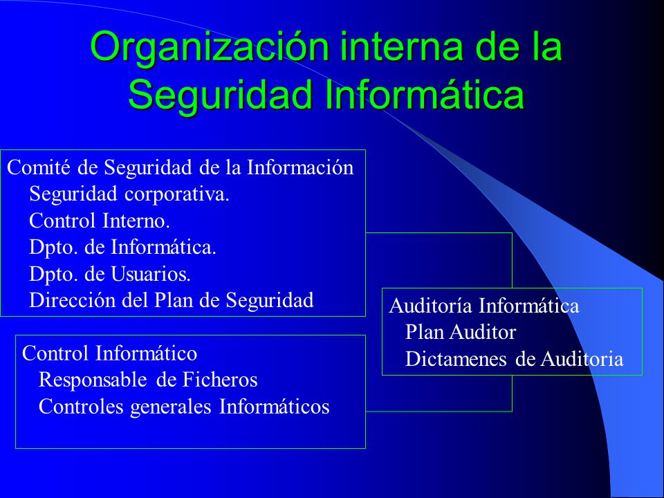

OBJETIVOS DE LA SEGURIDAD INFORMATICA
El objetivo de la seguridad informática no consiste sólo en preservar las siete características que señala COBIT. Si se quiere que siempre se mantengan esas características, entonces deberá formularse un plan para prevenir los principales tipos de ataque interno, externo, físico o electrónico sobre la información. Además, en caso de que llegara a suceder cualquier daño a la información, ya sea alteración o robo, también se debe contar con planes para la recuperación de esa información en su totalidad. Los planes de recuperación y el plan de contingencias se tratan en el capítulo 6. No todos los planes de recuperación de la información o del negocio tienen el mismo costo, el cual depende del daño que haya sufrido la información, incluyendo pérdida total, y de la clase de plan que haya sido aceptado por la alta dirección. En este sentido, se hace indispensable que todo personal del área de informática dentro de una organización esté consciente de cuál es el objetivo final de la seguridad de los sistemas de información. Como se dijo antes, la diferencia entre un día de descanso y un día laboral, en una empresa de manufactura o de servicio, es que en los días laborables la información que fluye es lo que le da vida a la compañía.
Tómese como ejemplo a una empresa de manufactura donde existe el concepto llamado “cadena de suministros”, que se muestra de forma esquemática en la figura 1.1. Es interesante observar que toda empresa, de manufactura o de servicios, sólo tiene como objetivo satisfacer a sus clientes; sin ellos, la compañía no existiría. En la figura 1.1 se muestra que la materia prima fluye hacia la empresa y de ahí sale en forma de producto terminado para ser entregado a los consumidores finales, quienes pagan por el producto o servicio recibido. De manera que el dinero fluye en sentido inverso al que fluyen las materias primas y el producto, haciendo que ese dinero sea suficiente para pagar a los distribuidores del producto, a todos los empleados de la empresa de manufactura, a los proveedores de materia prima, y que además la empresa tenga una
ganancia después de haber pagado impuestos al gobierno. Pero, lo más interesante de la figura 1.1 es que es posible ver cómo la información fluye a lo largo de toda la cadena en ambos sentidos. Imagínese por un momento lo que pasaría si el flujo de la información se interrumpe en alguna parte de esa cadena y en cualquier sentido. La empresa podría no saber qué debe producir, cuánto, ni a quién hay que entregarle el producto, o cuánto le debe a cada proveedor, a cada empleado o cuánto hay que cobrar a cada punto de venta a la que ya ha entregado producto. Sin información la empresa no puede funcionar. El trabajador del área de informática también debe saber que la empresa se administra realizando cuatro actividades básicas
PLANEACION
Consiste en planear actividades futuras con base en datos históricos, no sólo de la empresa, sino también del área de informática, y en específico del área de seguridad informática: ¿cuántos ataques y desastres ha tenido la empresa sobre su información?, ¿de qué tipo han sido los ataques?, ¿con qué frecuencia han ocurrido?, ¿quién los ha perpetrado? Lo que haga la empresa para evitar a corto y largo plazos que esto vuelva a suceder se llama planeación, y la base para hacer una correcta planeación es la información histórica que se tenga.

ORGANIZACION
Consiste en determinar ya sea el sitio más apropiado para colocar objetos, contratar más personal, determinar la secuencia óptima de actividades o determinar el orden de ideas más apropiado para lograr un objetivo. Para ello, se toma como base el estado actual del área de seguridad informática, se determina a qué nivel se quiere llegar y se organizan actividades entre el personal, así como la secuencia en que se llevarán a cabo las nuevas medidas de seguridad informática. Sólo se puede planear y establecer una organización si se cuenta con la información suficiente para ello.

La seguridad informática tiene sentido cuando se sabe para qué se quieren preservar las características de la información; por ello es importante realizar en forma adecuada los cuatro pasos o etapas del proceso administrativo, así la cadena de suministros funcionará en forma óptima, ya sea que se trate de una empresa de manufactura o de servicios. Si esta cadena funciona de la mejor manera posible, la empresa tendrá muchas más posibilidades de sobrevivir en un ambiente de mercado cada vez más competitivo. Todo esto se puede cumplir si se preservan siempre las siete características que debe tener la información mediante una seguridad informática adecuada y eficiente. Aunado a lo anterior, hay que destacar que el objetivo de la seguridad informática es identificar las amenazas a las cuales está expuesta la información, minimizar los riesgos de esa exposición, gestionar la adecuada utilización de las TIC que tiene la empresa, garantizar que en caso de un desastre informático se tenga una recuperación del negocio inmediata e integral, y cumplir con el marco legal que se exige por el manejo de datos personales y empresariales de los clientes y socios de la empresa.
 Soluciones en seguridad informática.")
 Rincón Godinez.")